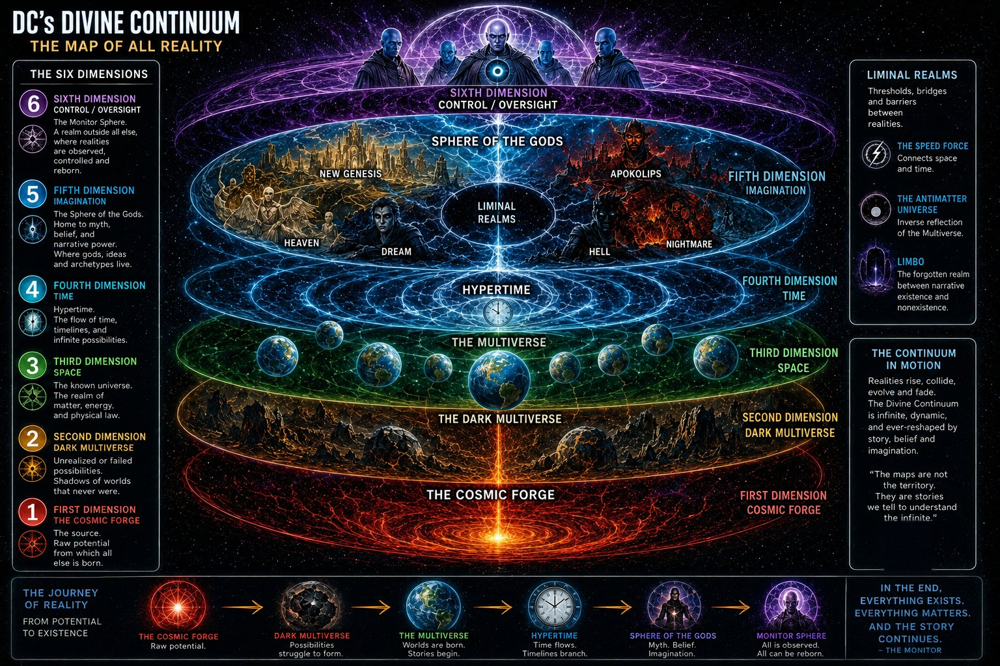
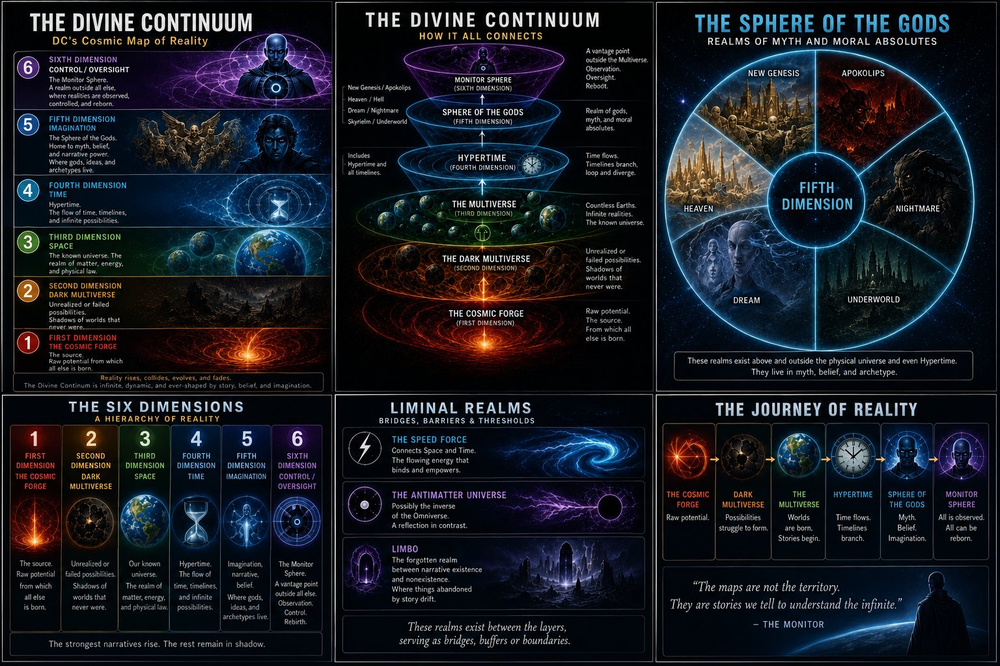

Occupational hazard: I read comic cosmology the way I read system diagrams. Somewhere around my third pass through DC's map of reality, I realized it wasn't a map at all. It was an architecture document, with sixty-five years of commit history behind it.
So here's my design review. Fair warning: I've been collecting these books since I was a kid, and I've been doing security for most of my adult life. This is the way.

Two kinds of “dimension”
In physics, a dimension is a direction you can measure: up and down, left and right, forward and back, plus time if you're feeling relativistic. M-theory asks for eleven of them, but it's still just adding directions, and most of those are curled up too small to ever notice.
DC uses the word for something else entirely. When the comics talk about the Fifth Dimension, home of Mister Mxyzptlk and his fellow imps, they don't mean a fifth direction. They mean a higher level of reality. Scott Snyder's Justice League run spelled it out: the Third Dimension is Space, the Fourth is Time, the Fifth is Imagination, and the Sixth is Control.
So in physics, dimensions are coordinates. In DC, they're layers. Every direction we can point lives inside the Third. Our one arrow of time runs inside the Fourth. Above that, it stops being geometry and starts being meaning.
Sixty-five years of refactoring
None of this was designed up front. Like most systems that last, it grew one urgent fix at a time.
It started in 1961 with The Flash #123, "Flash of Two Worlds." Barry Allen vibrated into another Earth and met Jay Garrick, the Flash from the 1940s. DC needed a way to keep its older heroes around without breaking the newer ones, so it spun up a second environment and called it Earth-Two. That was the first fork.
Forks multiply. By the 1980s there were Earths for the Golden Age heroes, for characters bought from other publishers, for evil twins, and for one-off jokes. Readers needed a guidebook to follow along. So in 1985, Marv Wolfman and George Pérez ran Crisis on Infinite Earths, the most famous migration in comics. The infinite Earths collapsed into one. A cosmic being called the Monitor gave his life so something would survive, and heroes died by the dozen. It was a monolith consolidation, and like every consolidation I've ever lived through, it left a lot of orphaned data behind.
The patches came fast. Zero Hour in 1994 tried to fix the timeline. Then in 1998, Mark Waid's The Kingdom introduced Hypertime, an idea he cooked up with Grant Morrison. It was basically an admission: the branches never really went away, so stop fighting them and document them.
Marvel fans will recognize this fight. In Loki, the Time Variance Authority spends its days pruning branch timelines to protect a single Sacred Timeline (opens in a new tab), which is basically Crisis on Infinite Earths run as a government agency. By the end of the second season, Loki stops the pruning and holds the branches together instead, letting every timeline grow. DC's Hypertime made the same call twenty-five years earlier.

Still from Loki (2021). © Marvel Studios / Disney.
Infinite Crisis (2005) and the weekly series 52 (2006 to 2007) brought the Multiverse back, this time capped at exactly 52 worlds. Final Crisis (2008) stress-tested it. Flashpoint (2011) rebooted the whole line. Then in 2014, Morrison's The Multiversity did what nobody had done in fifty years of production: it published the first official architecture diagram.
After that the pace picked up. Dark Nights: Metal (2017) added a basement. Snyder's Justice League (2018 to 2020) went looking for the original architect. Dark Nights: Death Metal (2020) declared that every story ever told counts. Dark Crisis on Infinite Earths (2022) lifted the 52-world cap and restored the infinite Multiverse. And in 2024, DC All In started the current era.
If that sounds like a codebase, it's because it is one. Hundreds of writers, thousands of issues, no single owner, and a business that can't take the system down for maintenance. Every Crisis is a migration, and every reboot is a reimage. And somehow the lights stay on.
Reading the official map
Here's the diagram Morrison and designer Rian Hughes drew for The Multiversity. Take a minute with it.

The Map of the Multiverse, from The Multiversity (2014). Grant Morrison, text and concept. Rian Hughes, design. © DC Comics. Interactive version on dc.com (opens in a new tab)
At the center sits the Orrery of Worlds: 52 universes occupying the same space, each vibrating at a different frequency so they don't collide. It's multi-tenancy: same hardware, separate tenants, with isolation done by frequency instead of by VLAN. Right in the middle of it, the House of Heroes and the Rock of Eternity act as the shared services that every tenant can reach.
The space between those worlds is the Bleed, a concept DC borrowed from Warren Ellis's Wildstorm books. It's the transit network. Ships cross it, and things leak through it. The legend even notes that the Monitors drilled siphons from their sphere down into the Orrery to harvest it, about the most honest picture of a control plane tapping a data plane I've ever seen on a poster.
Around the Orrery runs the Speed Force Wall. The map calls it the speed of light for the people inside, and only a limit to matter. Think of it as a rate limit. You can go fast, but not that fast, unless you're a speedster with the right credentials.
Then come the outer rings. The Sphere of the Gods holds every pantheon: Asgard and Olympus, Heaven and Hell, New Genesis and Apokolips, Dream and Nightmare. Past that is Limbo, which the map describes as the edge where matter and memory break down. Every org has one of those: the recycle bin nobody ever empties.
Outside everything sits the Monitor Sphere, where the operators live. Beyond it is the Source Wall, the limit even to thought, borrowed from Jack Kirby's Fourth World, and it's the perimeter. Nothing gets past it, at least in theory, and DC has spent decades testing that theory.
And at the very top, above the whole diagram, a hooded figure reads a book. Morrison calls it the Overvoid and has described it as something like God, looking at the Multiverse the way you'd look at a spot of ink on a blank white page. I read it more simply. That figure is you, holding the comic, with more access than anyone inside the book.
Don't skip the sidebar on the right, either. It catalogs the Monitors' Shift Ships: destroyers, carriers, tankers, hunters, and explorers, each built for a job. The destroyers exist to sterilize universes that have become contaminated. If you've ever reimaged a compromised fleet instead of trying to clean it, you know exactly how those Monitors felt.
The stack
Morrison's map is drawn as rings, seen from above. Add what Metal and Snyder's Justice League put on top of it, turn it on its side, and you get something you could hang in any network operations center:
Between the layers sit the connectors and buffers. The Speed Force links Space and Time like a message bus. The Antimatter Universe runs as the mirror-image environment. And Limbo holds every character the story forgot about but never quite deallocated.
If you came up through networking, this probably looks familiar. The OSI model starts with raw bits on a wire and climbs to meaning at the Application layer. DC's stack makes the same climb, from the raw potential of the Forge to the ideas in the Sphere of the Gods. The fit is loose, and I won't pretend otherwise, but it's there:
| DC layer | OSI (7) | TCP/IP (4) |
|---|---|---|
| 6 Monitor Sphere | no layer: governance, visibility, orchestration | no layer |
| 5 Sphere of the Gods | 7 Application, 6 Presentation, 5 Session | Application |
| 4 Time | 4 Transport | Transport |
| 3 Space | 3 Network | Internet |
| 2 Dark Multiverse | 2 Data Link | Link |
| 1 Cosmic Forge | 1 Physical | Link |
Two things stand out. Neither model has a slot for the Monitor Sphere, because it isn't a layer. In Zero Trust terms, it's the cross-cutting capabilities: visibility and analytics, automation and orchestration, and governance, applied across every pillar at once. CISA's model treats them that way, and DoD's goes further, making visibility and automation pillars of their own. Either way, that's the control plane this essay is named for. And OSI versus TCP/IP is the same split DC lives with: seven tidy layers in the textbook, four that actually ship. Morrison's map is the textbook. The monthly comics are what ships.

None of this is physics, of course. DC borrowed science's vocabulary and built a theology out of it. Marvel shipped a cinematic universe. DC has spent more than eighty years maintaining a mythology, and you can see the maintenance history in the architecture.

Who watches the Monitors?
Every architecture has a weak spot, and in DC's it's the operators.
The first Monitor, back in 1985, was the hero of the story. He saw the Crisis coming, gathered the heroes, and died so the rest of reality could survive. Honestly, a good admin.
By the time of Final Crisis, there were 52 Monitors, one assigned to each world. Then Morrison pulled the rug out. The Monitors had been feeding on the stories they were supposed to protect. One of them, Mandrakk, became a vampire of the Multiverse itself. The people with the most privileged access in all of creation turned out to be the threat.
I spend a fair amount of my working life on counter insider threat, so you can imagine how hard I laughed at that one. It's the oldest lesson in the field. The access that lets someone protect a system is the same access that lets them hurt it. In the end, only one Monitor was kept on, the young Nix Uotan.
Snyder took it one step further back. His Justice League introduced Perpetua, the original architect of the Multiverse and mother of the Monitor, the Anti-Monitor, and the World Forger. She'd built the first version to serve her, not the people living in it. Her own sons turned her in, she was sealed in the Source Wall, and the Multiverse was restarted on new rules. It's a supply-chain story at heart: the scariest vulnerability is the one the designer put there.
The Alpha and the Omega
Which brings me to the current era. DC's "All In" initiative (yes, it abbreviates to "AI," and yes, somebody in that marketing meeting knew it) kicked off in October 2024 with a special that split the line in two. On one side, Superman, later tied to Alpha energy. On the other, Darkseid seeding a whole new reality, the Absolute Universe, with Omega energy.
At first it read as hero world versus dark world. The further it went, the more it read as a duality: two halves that oppose and complete each other. Al Ewing's Absolute Green Lantern made the hint hard to miss. The people judged in that book are sent away to wait in "OA," spelled out as Omega-Alpha. Oa has been the home of the Green Lantern Corps for decades. Once Oa became Omega-Alpha, I couldn't unsee the shape: one cycle that keeps itself going, not two rivals.

The oldest name for that shape is yin and yang. Star Wars fans might call it a dyad in the Force. My favorite parallel comes from Shinto, where a single kami has two sides: the ara-mitama, its wild and destructive face, and the nigi-mitama, its calm and gentle one. Same spirit, two expressions, only whole together.
And yes, a guy who spends his working hours pairing red teams with blue teams to make purple was always going to fall for that one. The opposition is part of the design, not a flaw in it.
When I first wrote this piece, I said I might be reading tea leaves, and that I'd wait for the next big event to see. Then DC K.O. wrapped up in March 2026. The tournament for Darkseid's power ended with Superman giving up the crown instead of keeping it, and the fighters came out carrying both Alpha and Omega energy. I'm not claiming I called it. But I'm not not claiming it, either.
What a security person takes from all this
Strip away the capes and you're left with lessons I'd put in front of any architecture review board.
Systems that last get refactored, not replaced. DC never got to start over with a clean sheet. Every Crisis was a migration done live, with readers watching. Most of our environments are the same.
Write the diagram down. DC ran a Multiverse for decades before anyone published an official map. Once Morrison did, every writer after him had something to build against. That's how the next team avoids breaking things.
The failed builds don't disappear. The Dark Multiverse is every abandoned idea, still running somewhere underneath, still trying to get back in. Technical debt and shadow IT, in one picture.
Watch the watchers. The Monitors are the clearest insider threat story I know. Privileged access needs oversight, and the oversight needs oversight.
And opposition is a feature. Alpha and Omega, red and blue, ara and nigi. The systems that hold up are the ones that test themselves against their own shadow.
Why it holds up
Taken as a whole, DC's cosmology is a modern myth built from quantum vocabulary, metaphysics, comparative religion, and pure story logic. It's messy and it sometimes contradicts itself, like any production system that's been running this long. It still works.
A forge of raw potential sits at the bottom, a watchtower sits at the top, and strung between them is every story anyone ever believed in hard enough. And somewhere above all of it, past the Source Wall, someone is holding the book and turning the page. The architecture just tells you where the story runs.

Further reading: DC's own Map of the Multiverse, DC's own history of the Multiverse, the DC Fandom wiki entries on the Multiverse, the Divine Continuum, the Absolute Universe, Earth Omega, and DC All In Special #1, plus the Marvel Cinematic Universe wiki on the Sacred Timeline. For a great deep dive on Darkseid's place in all this, watch Tyler's channel, The Imaginary Axis, on YouTube. Start with his breakdown of Darkseid's true nature, then the follow-up.